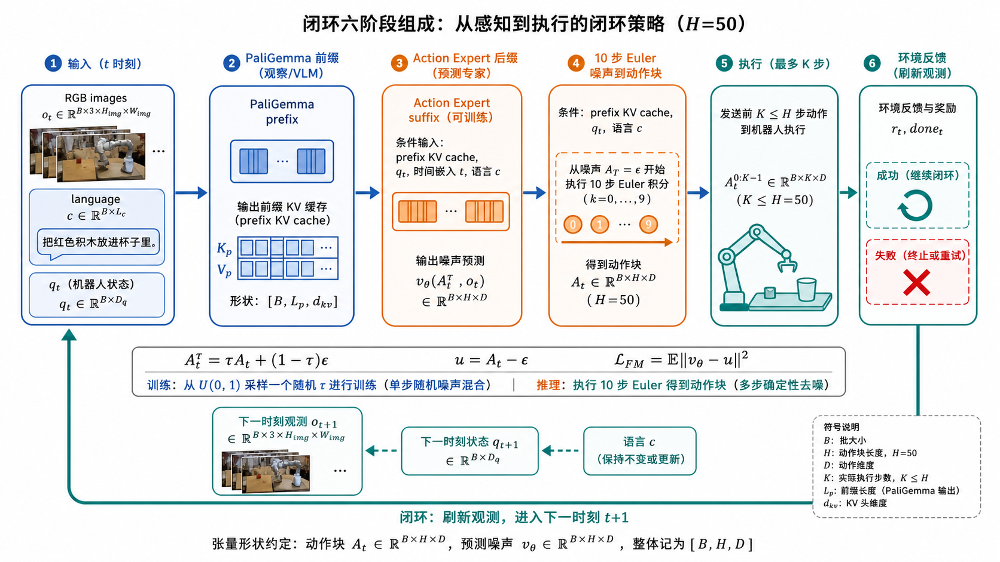
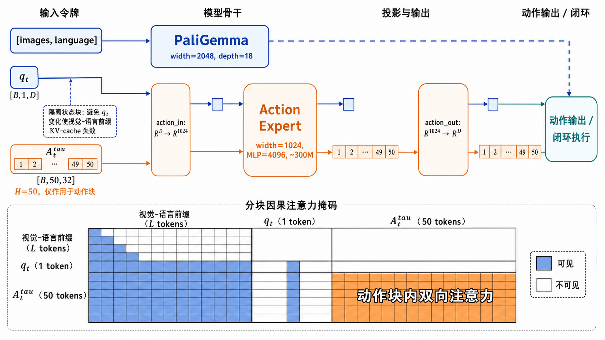
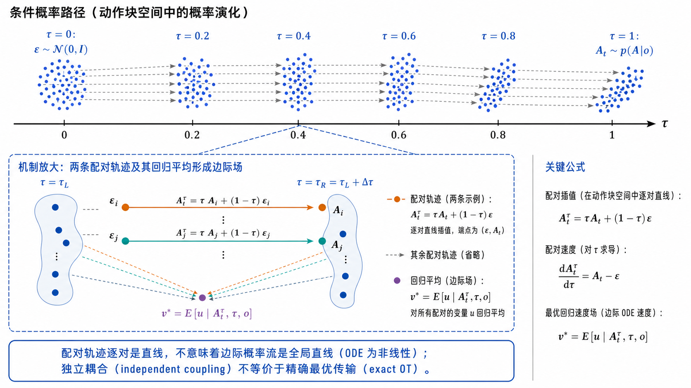
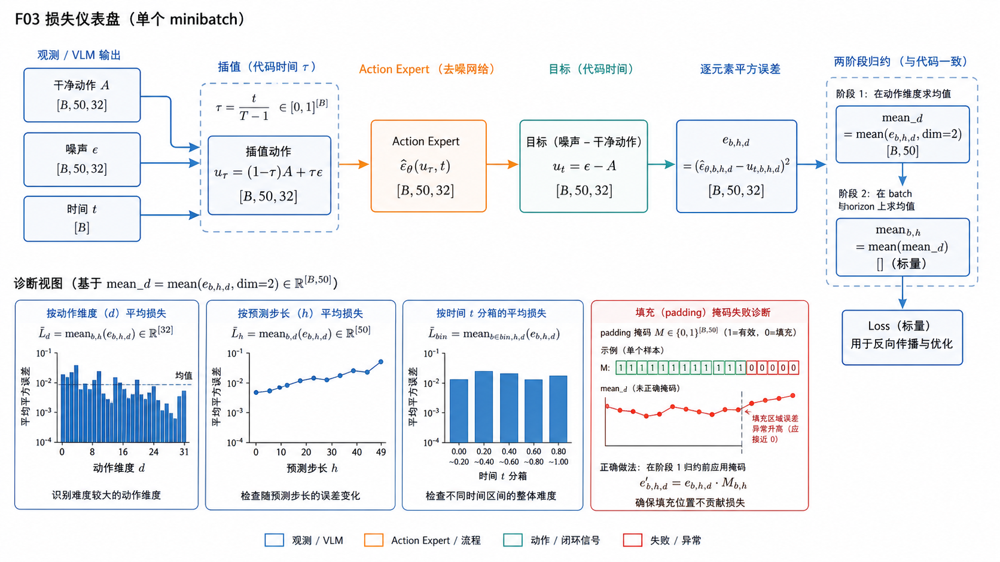
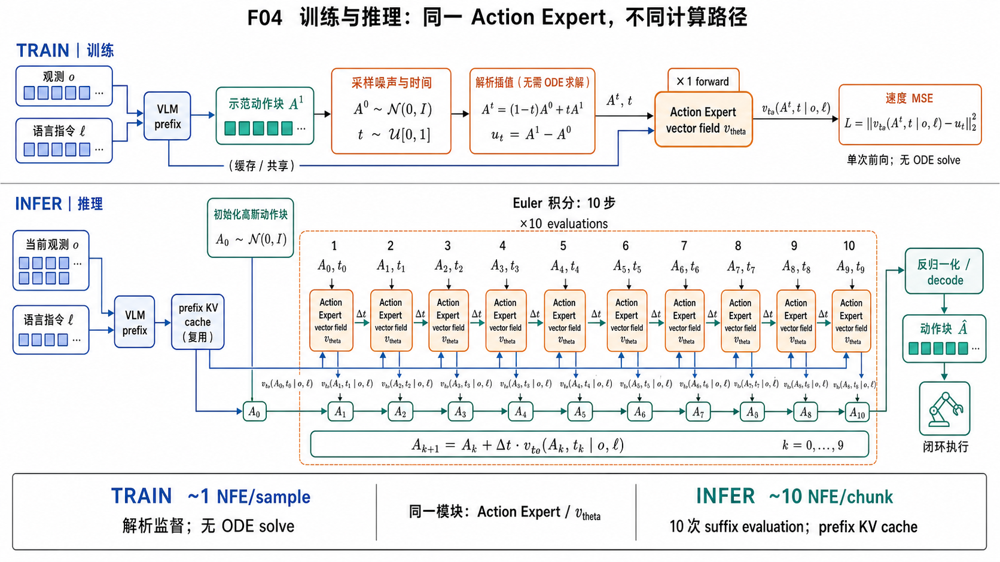
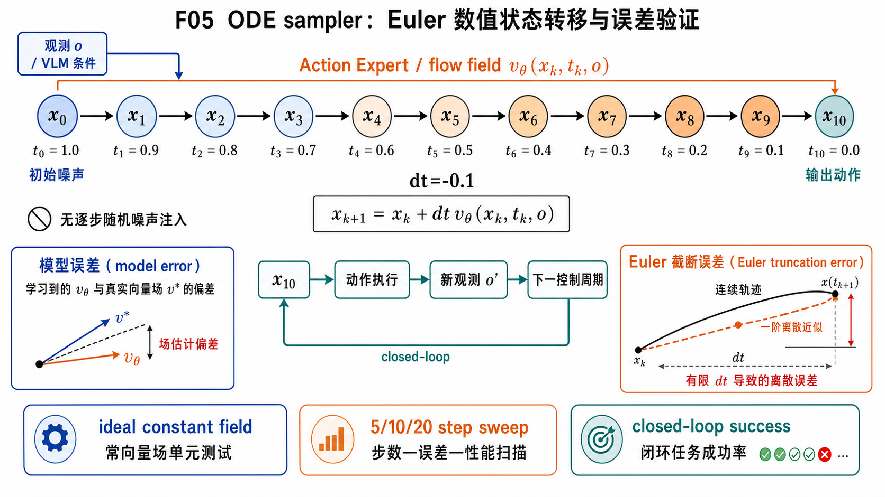
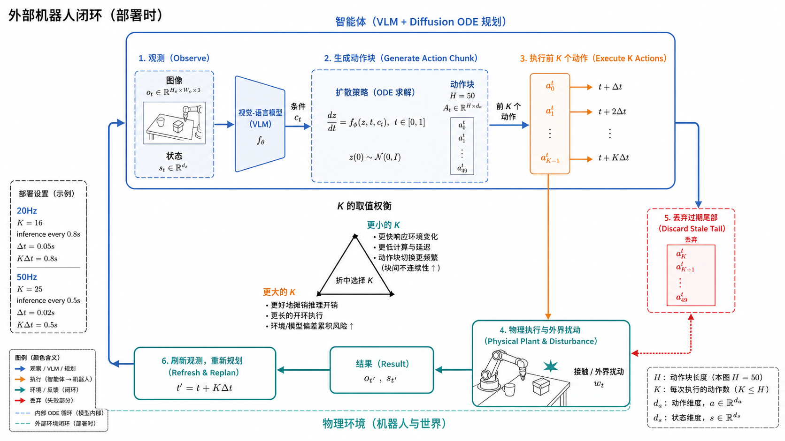
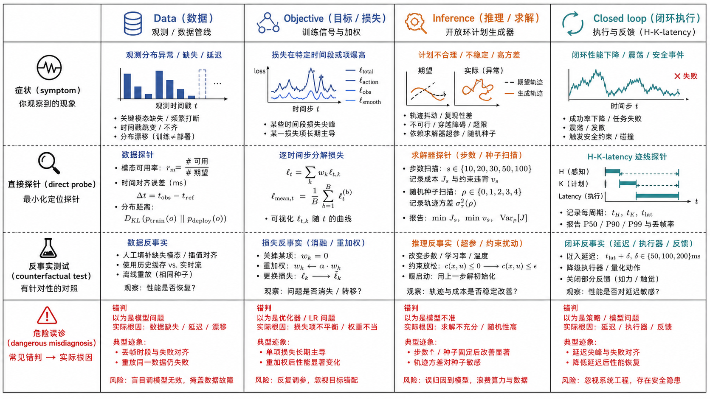
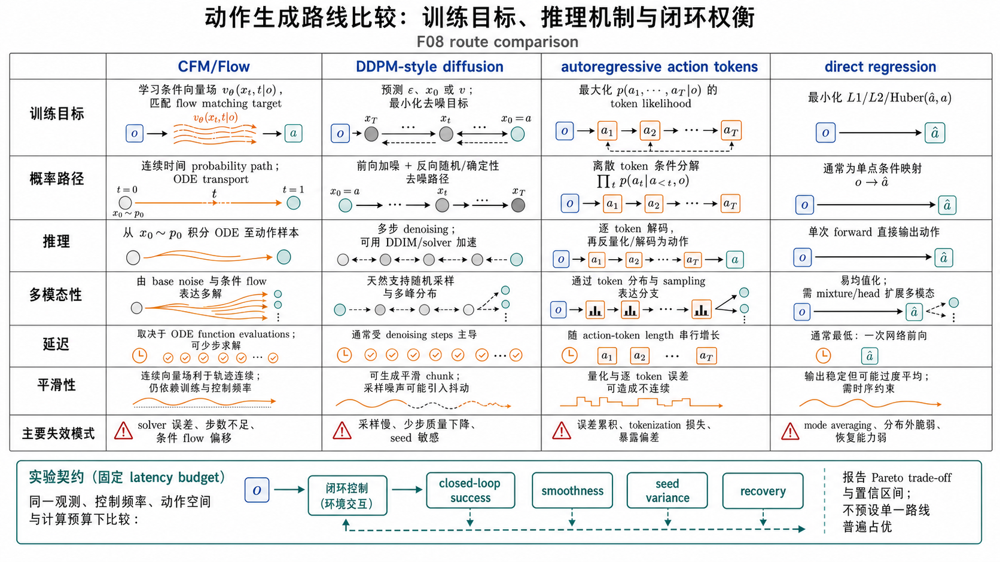

pi0 Action Expert 与 Conditional Flow Matching：从公式、代码到机器人闭环
本文依据 pi0 论文、固定在 openpi commit 15a9616a00943ada6c20a0f158e3adb39df2ccac 的官方代码，以及已审计的实现类文章综合而成。为避免把解释写成“原文结论”，全文使用三种标签：[论文事实] 表示论文直接陈述；[代码事实] 表示固定版本代码可直接核验；[推导] 表示由公式、代码或控制系统原理推出的结论。博客只承担解释、工程经验或争议线索，分别标为 [来源观点] 或 [综合判断] 。
1. 白话总览：pi0 到底在做什么 
图 1 · pi0 Action Expert 条件流匹配与机器人闭环总览 一张图分清训练向量场、推理 ODE 与外部机器人反馈。 传统视觉语言模型擅长回答“画面里有什么、下一步应当做什么”，但机器人最终需要的不是一句话，而是一串有单位、有频率、有连续性的电机指令。pi0 的核心做法，是保留预训练视觉语言模型理解图像和语言的能力，同时增加一套专门处理机器人状态、连续动作和流时间的参数，也就是 Action Expert ；然后不把动作离散成词，而是学习一个连续向量场，把高斯噪声逐步搬运成一个未来动作块。
[论文事实，P1/P2] 观察可写成
o t = [ I t 1 , … , I t n , l t , q t ] , o_t=[I_t^1,\ldots,I_t^n,l_t,q_t], o t = [ I t 1 , … , I t n , l t , q t ] , 其中 I t i I_t^i I t i l t l_t l t q t q_t q t
p ( A t ∣ o t ) , A t = [ a t , a t + 1 , … , a t + H − 1 ] , p(A_t\mid o_t),\qquad
A_t=[a_t,a_{t+1},\ldots,a_{t+H-1}], p ( A t ∣ o t ) , A t = [ a t , a t + 1 , … , a t + H − 1 ] , 论文任务使用 H = 50 H=50 H = 50
可以把一次策略调用想成四段流水线：第一段，视觉语言主干把图像和指令编码成语义上下文；第二段，Action Expert 读取机器人状态、当前带噪动作块和流时间；第三段，模型预测整个动作块在当前流时间应沿哪个方向移动；第四段，Euler 求解器重复十次，将随机噪声改造成归一化动作块，再由数据变换还原到机器人命令空间。
[论文事实，P6] 论文以 τ = 0 \tau=0 τ = 0 τ = 1 \tau=1 τ = 1 [代码事实，C5] openpi 恰好采用反向坐标：代码中的 t = 1 t=1 t = 1 t = 0 t=0 t = 0
另一个必须从一开始分清的概念，是模型内部的 ODE 循环与机器人外部的反馈循环。十次 Euler 是在同一份观察条件下生成一个动作块；机器人是否闭环，取决于执行多少步后重新拍图、重新规划。H = 50 H=50 H = 50 K < 50 K<50 K < 50
[来源观点，B01/B02/B05] 官方介绍和实现型文章常把 pi0 概括为“VLM + flow matching”。这个说法适合作为入口，却会隐藏三个工程事实：Action Expert 不是外挂在 VLM 后面的普通 MLP；流匹配生成不是一次前向；action chunk 也不会天然带来反馈、安全或实时性。真正可复现的最小心智模型应当是：
多模态条件 → 共享注意力中的双参数路由 → 动作块向量场 → ODE 数值积分 → 反归一化与外部重规划 . \text{多模态条件} \rightarrow
\text{共享注意力中的双参数路由} \rightarrow
\text{动作块向量场} \rightarrow
\text{ODE 数值积分} \rightarrow
\text{反归一化与外部重规划}. 多模态条件 → 共享注意力中的双参数路由 → 动作块向量场 → ODE 数值积分 → 反归一化与外部重规划 . 2. Action Expert 架构与 attention：不是“VLM 后接动作头” 
图 2 · Action Expert 架构边界与张量接口 三块 attention、两套权重、prefix KV cache 和 [B,H,D] 接口。 2.1 两套权重，一次注意力交互
[论文事实，P1] pi0 被描述为一个具有两套权重的 transformer。图像和语言 token 路由到较大的 PaliGemma/VLM 主干；机器人状态 q t q_t q t A t τ A_t^\tau A t τ
这里“expert”更准确的含义是参数路由与表示域的边界 。图像 patch、文本 token 与连续动作向量的统计性质差异极大。让机器人 token 使用专门权重，可以避免要求语言主干同时承担所有低层控制拟合；共享 attention 又使动作预测能读取图像和语言语义。若把它画成“VLM 输出一个语义向量，再交给独立控制器”，就丢失了 token 级条件交互这一关键结构。
[代码事实，C1] 固定版本代码用 _gemma.Module(configs=[paligemma_config, action_expert_config], ...) 构建成对的 Gemma 配置；action_in_proj 把每个动作向量映射到 expert 宽度，action_out_proj 再把 expert hidden state 投回动作维度。这证明输出是连续动作空间里的 velocity，而不是词表 logits。
2.2 prefix、suffix 与 mask
在推理中，输入可分成稳定 prefix 与迭代 suffix。图像和语言在一次 ODE 求解期间不变，先形成 prefix；状态、流时间和当前带噪动作形成 suffix。[论文事实，P4] 动作 expert 使用全双向 attention mask，因此 action chunk 内所有动作 token 可以互相注意。它们不是严格的自回归序列：第 7 个未来动作可以结合第 30 个未来动作的当前隐表示，共同修正整段轨迹。
[论文事实，P7] 状态被隔离在适当的 attention block，使其在每个积分步不必重复作为变化部分计算，并允许缓存不变 prefix 的 K/V。[代码事实，C6] 实现先运行 prefix 得到 kv_cache；suffix attention mask 的形状被断言为
[ B , L s , L p + L s ] , [B,L_s,L_p+L_s], [ B , L s , L p + L s ] , 其中 L p L_p L p L s L_s L s suffix_out[:, -H:] 取 action hidden states 做输出投影。
这套 mask 同时承担三件事：允许动作读取视觉语言条件；允许动作块内部协调；阻止会破坏缓存因果边界的信息依赖。mask 画错并不一定报 shape error，模型仍会训练，却可能出现条件泄漏、缓存结果与非缓存结果不一致、或动作无法读取必要上下文等“静默失败”。
2.3 action_dim、horizon 与物理自由度
[代码事实，C2] openpi 默认 action_horizon=50、action_dim=32，因此动作 tensor 为 [ B , 50 , 32 ] [B,50,32] [ B , 50 , 32 ]
[推导] Action Expert 同时利用 horizon 轴和 action-coordinate 轴：horizon 轴表达时间结构，coordinate 轴表达同一时刻不同关节/末端控制量的耦合。模型 loss 在 coordinate 轴先做 reduction，并不意味着各坐标独立；attention 和 MLP 已在 reduction 之前产生联合预测。
2.4 架构检查表
复现时应逐项确认：图像/语言是否进入 VLM 路由；状态、动作、时间是否进入 expert 路由；动作输入输出投影是否对应相同规范化空间；action tokens 是否双向互看；suffix 是否能读取 prefix；缓存开启与关闭时的输出是否在数值容差内一致；padding 维是否有正确的损失和执行 mask；当前实现究竟是原始 pi0，还是 pi0.5、pi0-FAST 或 LeRobot 适配层。B02、B03、B04 都提示同名生态实现不断演化，不能把后续模型的机制反投影到 2024 年论文。
3. CFM：从数据、概率路径到完整公式推导 
图 3 · Conditional probability path 与目标速度场 线性样本桥的目标速度为何可直接监督，以及 conditional field 如何成为 marginal field。 3.1 问题定义
固定观察 o o o A ∼ p data ( A ∣ o ) A\sim p_{\text{data}}(A\mid o) A ∼ p data ( A ∣ o ) ϵ ∼ N ( 0 , I ) \epsilon\sim\mathcal N(0,I) ϵ ∼ N ( 0 , I )
d X τ d τ = v θ ( X τ , τ , o ) , X 0 ∼ N ( 0 , I ) , X 1 ∼ p data ( ⋅ ∣ o ) . \frac{dX_\tau}{d\tau}=v_\theta(X_\tau,\tau,o),
\qquad X_0\sim\mathcal N(0,I),\quad X_1\sim p_{\text{data}}(\cdot\mid o). d τ d X τ = v θ ( X τ , τ , o ) , X 0 ∼ N ( 0 , I ) , X 1 ∼ p data ( ⋅ ∣ o ) . [论文事实，P4] pi0 使用独立抽取的 A , ϵ A,\epsilon A , ϵ
X τ = τ A + ( 1 − τ ) ϵ , 0 ≤ τ ≤ 1. X_\tau=\tau A+(1-\tau)\epsilon,
\qquad 0\le \tau\le 1. X τ = τ A + ( 1 − τ ) ϵ , 0 ≤ τ ≤ 1. 对 τ \tau τ
u τ ( X τ ∣ A , ϵ ) = d X τ d τ = A − ϵ . u_\tau(X_\tau\mid A,\epsilon)
=\frac{dX_\tau}{d\tau}
=A-\epsilon. u τ ( X τ ∣ A , ϵ ) = d τ d X τ = A − ϵ . 因此每一对端点上的监督速度是常数。注意“常数”只对已采样端点对成立；模型只看到 X τ , τ , o X_\tau,\tau,o X τ , τ , o A , ϵ A,\epsilon A , ϵ
3.2 conditional loss 为什么能学到 marginal field
[论文事实，P3] 论文目标可写为
L ( θ ) = E o , A , ϵ , τ [ ∥ v θ ( X τ , τ , o ) − ( A − ϵ ) ∥ 2 2 ] . \mathcal L(\theta)=
\mathbb E_{o,A,\epsilon,\tau}
\left[
\left\|v_\theta(X_\tau,\tau,o)-(A-\epsilon)\right\|_2^2
\right]. L ( θ ) = E o , A , ϵ , τ [ ∥ v θ ( X τ , τ , o ) − ( A − ϵ ) ∥ 2 2 ] . [推导] 对固定的 x , τ , o x,\tau,o x , τ , o
v ∗ ( x , τ , o ) = E [ A − ϵ ∣ X τ = x , τ , o ] . v^*(x,\tau,o)
=\mathbb E[A-\epsilon\mid X_\tau=x,\tau,o]. v ∗ ( x , τ , o ) = E [ A − ϵ ∣ X τ = x , τ , o ] . 证明只需使用平方完成。令 U = A − ϵ U=A-\epsilon U = A − ϵ m = E [ U ∣ x , τ , o ] m=\mathbb E[U\mid x,\tau,o] m = E [ U ∣ x , τ , o ]
E [ ∥ v − U ∥ 2 ∣ x , τ , o ] = E [ ∥ v − m + m − U ∥ 2 ∣ x , τ , o ] = ∥ v − m ∥ 2 + E [ ∥ U − m ∥ 2 ∣ x , τ , o ] , \begin{aligned}
\mathbb E[\|v-U\|^2\mid x,\tau,o]
&=\mathbb E[\|v-m+m-U\|^2\mid x,\tau,o]\\
&=\|v-m\|^2+\mathbb E[\|U-m\|^2\mid x,\tau,o],
\end{aligned} E [ ∥ v − U ∥ 2 ∣ x , τ , o ] = E [ ∥ v − m + m − U ∥ 2 ∣ x , τ , o ] = ∥ v − m ∥ 2 + E [ ∥ U − m ∥ 2 ∣ x , τ , o ] , 因为交叉项的条件期望为零，所以 v = m v=m v = m x x x
3.3 连续性方程与概率运输
[推导] 若向量场足够正则，随 ODE 演化的密度 p τ ( x ∣ o ) p_\tau(x\mid o) p τ ( x ∣ o )
∂ τ p τ ( x ∣ o ) + ∇ x ⋅ ( p τ ( x ∣ o ) v ( x , τ , o ) ) = 0. \partial_\tau p_\tau(x\mid o)
+\nabla_x\cdot\left(p_\tau(x\mid o)v(x,\tau,o)\right)=0. ∂ τ p τ ( x ∣ o ) + ∇ x ⋅ ( p τ ( x ∣ o ) v ( x , τ , o ) ) = 0. 这说明网络不是在预测某个“去噪后的终点”，而是在每个中间位置给出概率质量流动的瞬时速度。多模态动作分布也不要求输出均值动作：不同初始噪声可落到不同模态；但模型误差、有限容量和数据不平衡仍可能造成模式合并。
3.4 代码时间的严格换元
[代码事实，C3] openpi 使用
t = 0.001 + 0.999 B , B ∼ Beta ( 1.5 , 1 ) , t=0.001+0.999B,\qquad B\sim\operatorname{Beta}(1.5,1), t = 0.001 + 0.999 B , B ∼ Beta ( 1.5 , 1 ) , 以及
x t = t ϵ + ( 1 − t ) A , u t = ϵ − A . x_t=t\epsilon+(1-t)A,
\qquad u_t=\epsilon-A. x t = t ϵ + ( 1 − t ) A , u t = ϵ − A . [推导，D1] 令 t = 1 − τ t=1-\tau t = 1 − τ
X 1 − t = ( 1 − t ) A + t ϵ = x t , X_{1-t}=(1-t)A+t\epsilon=x_t, X 1 − t = ( 1 − t ) A + t ϵ = x t , 并由链式法则
d x t d t = d X τ d τ d τ d t = ( A − ϵ ) ( − 1 ) = ϵ − A . \frac{dx_t}{dt}
=\frac{dX_\tau}{d\tau}\frac{d\tau}{dt}
=(A-\epsilon)(-1)=\epsilon-A. d t d x t = d τ d X τ d t d τ = ( A − ϵ ) ( − 1 ) = ϵ − A . 所以 target 的符号反转是坐标反转的必然结果。论文的正时间 Euler
X τ + Δ = X τ + Δ v τ X_{\tau+\Delta}=X_\tau+\Delta v_\tau X τ + Δ = X τ + Δ v τ 与代码的负时间 Euler
x t + Δ t = x t + Δ t v t , Δ t < 0 x_{t+\Delta t}=x_t+\Delta t\,v_t,\qquad \Delta t<0 x t + Δ t = x t + Δ t v t , Δ t < 0 完全等价。
3.5 时间采样分布
[论文事实，P5] 论文用 s = 0.999 s=0.999 s = 0.999 s s s [推导，D2] 代码若采样 t = 0.001 + 0.999 B t=0.001+0.999B t = 0.001 + 0.999 B
τ = 1 − t = 0.999 ( 1 − B ) . \tau=1-t=0.999(1-B). τ = 1 − t = 0.999 ( 1 − B ) . 因为 B ∼ Beta ( 1.5 , 1 ) B\sim\operatorname{Beta}(1.5,1) B ∼ Beta ( 1.5 , 1 ) 1 − B ∼ Beta ( 1 , 1.5 ) 1-B\sim\operatorname{Beta}(1,1.5) 1 − B ∼ Beta ( 1 , 1.5 ) t t t τ \tau τ
3.6 关于 covariance 记法的边界
证据包指出：论文一处高斯路径的显示式把 covariance 写成 ( 1 − τ ) I (1-\tau)I ( 1 − τ ) I ( 1 − τ ) ϵ (1-\tau)\epsilon ( 1 − τ ) ϵ ( 1 − τ ) 2 I (1-\tau)^2I ( 1 − τ ) 2 I
4. loss 与代码张量 reduction：从 [ B , H , D ] [B,H,D] [ B , H , D ] 
图 4 · Flow-matching loss 的 minibatch 计算链 从 [B,50,32] 误差到 [B,50]，再到训练 scalar。 设批量大小为 B B B H H H D D D H = 50 , D = 32 H=50,D=32 H = 50 , D = 32
A , ϵ , x t , u t , v t ∈ R B × H × D . A,\epsilon,x_t,u_t,v_t\in\mathbb R^{B\times H\times D}. A , ϵ , x t , u t , v t ∈ R B × H × D . 时间最初通常按 batch 采样，形如 [ B ] [B] [ B ] [ B , 1 , 1 ] [B,1,1] [ B , 1 , 1 ] [代码事实，C3] compute_loss 计算
ℓ b , h = 1 D ∑ d = 1 D ( v b , h , d − u b , h , d ) 2 , \ell_{b,h}
=\frac{1}{D}\sum_{d=1}^{D}
\left(v_{b,h,d}-u_{b,h,d}\right)^2, ℓ b , h = D 1 d = 1 ∑ D ( v b , h , d − u b , h , d ) 2 , 也就是只在最后一个 action-coordinate 轴执行 mean(..., axis=-1)，返回 shape [ B , H ] [B,H] [ B , H ] [代码事实，C4] 训练脚本随后调用 jnp.mean(chunked_loss)，得到
L = 1 B H ∑ b = 1 B ∑ h = 1 H ℓ b , h = 1 B H D ∑ b , h , d ( v b , h , d − u b , h , d ) 2 . \mathcal L
=\frac{1}{BH}\sum_{b=1}^{B}\sum_{h=1}^{H}\ell_{b,h}
=\frac{1}{BHD}\sum_{b,h,d}
(v_{b,h,d}-u_{b,h,d})^2. L = B H 1 b = 1 ∑ B h = 1 ∑ H ℓ b , h = B HD 1 b , h , d ∑ ( v b , h , d − u b , h , d ) 2 . 因此最终标量在默认无额外权重时等价于对三轴全均值，但两阶段 reduction 保留了 [ B , H ] [B,H] [ B , H ] H H H
若存在 padding 维 mask m b , h , d ∈ { 0 , 1 } m_{b,h,d}\in\{0,1\} m b , h , d ∈ { 0 , 1 }
ℓ b , h = ∑ d m b , h , d ( v b , h , d − u b , h , d ) 2 max ( 1 , ∑ d m b , h , d ) . \ell_{b,h}
=\frac{\sum_d m_{b,h,d}(v_{b,h,d}-u_{b,h,d})^2}
{\max(1,\sum_d m_{b,h,d})}. ℓ b , h = max ( 1 , ∑ d m b , h , d ) ∑ d m b , h , d ( v b , h , d − u b , h , d ) 2 . [综合判断] 当前证据只能确认固定代码路径的普通 mean，不能据此断言所有数据变换都不处理 padding。审计时应沿 dataset transform、action mask、model loss 和 executor decoding 四处逐一检查，而不是只看模型主体。
Loss 的数值还受动作归一化支配。某个关节若量纲大十倍，未归一化 MSE 会让它贡献约百倍平方误差。反之，归一化统计来自错误机器人或错误数据版本，训练 loss 可能正常下降，但反归一化后的命令完全错误。因此“loss 降了”最多证明模型拟合了当前 model-space target，不能证明物理控制正确。
建议保留四类诊断统计：每个 horizon 的 ℓ h \ell_h ℓ h
5. 训练与推理：一张表锁住 time convention 
图 5 · 训练单点采样 vs 推理多步积分 训练不用求 ODE；推理必须沿 learned field 数值积分。
项目
论文时间 τ \tau τ
openpi 代码时间 t t t
坐标关系
τ = 1 − t \tau=1-t τ = 1 − t t = 1 − τ t=1-\tau t = 1 − τ
数据端
τ = 1 \tau=1 τ = 1 t = 0 t=0 t = 0
噪声端
τ = 0 \tau=0 τ = 0 t = 1 t=1 t = 1
插值
x τ = τ A + ( 1 − τ ) ϵ x_\tau=\tau A+(1-\tau)\epsilon x τ = τ A + ( 1 − τ ) ϵ x t = ( 1 − t ) A + t ϵ x_t=(1-t)A+t\epsilon x t = ( 1 − t ) A + t ϵ
target
A − ϵ A-\epsilon A − ϵ ϵ − A \epsilon-A ϵ − A
推理起点
τ = 0 , x = ϵ \tau=0,x=\epsilon τ = 0 , x = ϵ t = 1 , x = ϵ t=1,x=\epsilon t = 1 , x = ϵ
推理终点
τ = 1 \tau=1 τ = 1 t = 0 t=0 t = 0
Euler 步长
+ 1 / N +1/N + 1/ N − 1 / N -1/N − 1/ N
训练伪流程是：采样示范 o , A o,A o , A
推理伪流程是：对整个 [ B , H , D ] [B,H,D] [ B , H , D ]
[推导] 一个极便宜的符号单测可以拦住大量 bug：不用神经网络，直接令 oracle field 等于真实 code target v = ϵ − A v=\epsilon-A v = ϵ − A x 1 = ϵ x_1=\epsilon x 1 = ϵ N N N Δ t = − 1 / N \Delta t=-1/N Δ t = − 1/ N
x 0 = ϵ + ∑ k = 1 N ( − 1 N ) ( ϵ − A ) = A . x_0=\epsilon+\sum_{k=1}^{N}\left(-\frac1N\right)(\epsilon-A)=A. x 0 = ϵ + k = 1 ∑ N ( − N 1 ) ( ϵ − A ) = A . 若不等于 A A A
端点处理也应显式记录。代码训练时间位于 [ 0.001 , 1 ] [0.001,1] [ 0.001 , 1 ] t = 0 t=0 t = 0
6. Euler、KV cache 与 latency：十步不是十次完整 VLM 
图 6 · ODE Action Sampler 与误差来源 openpi 的反向 code-time、负 dt、十步 Euler 及验证钩子。 [论文事实，P6；代码事实，C5] 默认采样采用 10 步显式 Euler。令 N = 10 N=10 N = 10 Δ t = − 0.1 \Delta t=-0.1 Δ t = − 0.1
x k + 1 = x k − 0.1 v θ ( x k , t k , o ) , t k + 1 = t k − 0.1. x_{k+1}=x_k-0.1\,v_\theta(x_k,t_k,o),
\qquad t_{k+1}=t_k-0.1. x k + 1 = x k − 0.1 v θ ( x k , t k , o ) , t k + 1 = t k − 0.1. 显式 Euler 的局部截断误差通常为 O ( Δ t 2 ) O(\Delta t^2) O ( Δ t 2 ) O ( Δ t ) O(\Delta t) O ( Δ t )
[论文事实，P7；代码事实，C6] 图像、语言和可缓存状态 prefix 在一次 solve 中不变，K/V 只计算一次；每个 Euler step 主要重算 action/time suffix。粗略延迟可写成
T policy ≈ T prefix + N T suffix + T decode + T runtime . T_{\text{policy}}
\approx T_{\text{prefix}}+N\,T_{\text{suffix}}+T_{\text{decode}}+T_{\text{runtime}}. T policy ≈ T prefix + N T suffix + T decode + T runtime . 没有 cache 时则近似为 N ( T prefix + T suffix ) N(T_{\text{prefix}}+T_{\text{suffix}}) N ( T prefix + T suffix )
cache 的合法边界是一次固定条件的 ODE solve。摄像头帧、prompt、状态或任何被编码进 prefix 的量发生变化后，旧 cache 就不再代表当前条件。跨重规划周期复用 cache 只有在明确接受旧观察、并且 token 与 position 语义仍一致时才可能成立，不能因为 shape 一样就复用。
更高阶 solver 不一定更快。Heun 一步通常需要两次 field evaluation；若用 5 个 Heun step，NFE 仍可能是 10。评价 solver 应同时报告：NFE、真实墙钟、设备利用率、动作质量、轨迹平滑度、成功率和安全事件。[综合判断，B05/B06/B07] 复现文章里的单次推理时间通常还混入编译、checkpoint 加载、数据预处理或首次 warm-up，不能直接拿来推断稳态控制频率。
7. action chunk 与外部闭环：H H H 
图 7 · Action chunk 的闭环执行与重规划 H 是预测长度，K 是执行步长；反馈由重观测与重规划形成。 定义模型输出 horizon 为 H H H K K K f c f_c f c T p T_p T p H / f c H/f_c H / f c K / f c K/f_c K / f c H = 50 H=50 H = 50 K K K
若 K = H K=H K = H K = 1 K=1 K = 1 1 < K < H 1<K<H 1 < K < H
[来源观点，B01] 官方文章以高达约 50 Hz 的灵巧控制需求解释 action chunk 的动机。这里必须分清 50 Hz 低层命令频率与模型推理频率：模型不必每 20 ms 完整运行一次，动作块可摊销昂贵推理；但只要重规划没有赶上 buffer 消耗，就会发生动作欠载或继续执行陈旧命令。
[知乎作者解释，Z1] 林天威的 pi0 论文笔记给出一个具体部署说法：50 Hz 平台上，H = 50 H=50 H = 50 K = 25 K=25 K = 25 H ≠ K H\ne K H = K
一个完整部署契约至少应记录：H H H K K K
[推导] 当 T p > K / f c T_p>K/f_c T p > K / f c
8. 数据—目标—推理—闭环四层诊断 
图 8 · 数据—目标—推理—闭环四层诊断矩阵 用症状、probe 和反事实实验定位失败，而不只看 success rate。 8.1 数据层
数据层问“模型看到的 action 是否就是机器人要执行的 action”。检查机器人 embodiment 映射、单位、坐标系、关节顺序、绝对/相对动作、归一化统计、时间对齐、有效维 mask、相机同步和语言任务标签。典型症状是训练 loss 正常、离线预测也像动作，但上机方向反了、幅度过大、夹爪通道错位或始终慢半拍。
Canonical 验证是做 transform round-trip：选一条真实样本，经过训练 preprocess 再 inverse transform，逐维比较原动作；并用 metadata 验证统计量和机器人身份。不要用“数值看起来在 [ − 1 , 1 ] [-1,1] [ − 1 , 1 ]
8.2 目标层
目标层问“插值、target 和 reduction 是否一致”。检查论文/代码 time convention、Beta 采样、endpoint、noise shape、broadcast、padding mask 以及最终 scalar reduction。典型症状是 loss 不降、生成越来越像噪声、只在某些时间段爆炸、或 action 后半段明显更差。
Canonical 验证是 oracle-field 单测加 shape 断言：[ B , H , D ] → [ B , H ] → [ ] [B,H,D]\rightarrow[B,H]\rightarrow[] [ B , H , D ] → [ B , H ] → [ ]
8.3 推理层
推理层问“网络和数值求解器是否执行训练时定义的场”。检查起点噪声、dt 符号、步数、time embedding、KV cache、mask、随机种子、dtype、solver 更新和输出 inverse transform。典型症状是训练指标好但采样坏、cache on/off 输出差异巨大、步数增加反而恶化、首轮极慢或显存随 step 增长。
Canonical 验证是在同一输入、同一噪声下对比 cache 与非 cache，以及记录每步 t k , ∣ x k ∣ , ∣ v k ∣ t_k,|x_k|,|v_k| t k , ∣ x k ∣ , ∣ v k ∣
8.4 闭环层
闭环层问“生成的好 chunk 是否以正确时序进入真实系统”。检查 K K K
Canonical 验证是带时间戳的端到端 trace：从曝光、预处理、推理、动作入队到执行逐段记录，并在可控扰动下测反应延迟。只报告模型 forward latency 无法证明闭环性能。
四层应按顺序排查。数据语义错时，调 solver 没意义；target 符号错时，加 cache 只会更快地产生错动作；推理正确但 K K K
9. Route matrix：概念、训练、推理与部署路线矩阵 
图 9 · CFM 与动作生成替代路线对照 在相同延迟预算下比较 CFM、DDPM、action tokens 与 direct regression。
路线
表示/目标
生成方式
优点
主要风险
pi0 证据边界
pi0 CFM
连续 action chunk velocity MSE
ODE，多步 Euler
保留连续量、多模态、联合 chunk
NFE、time/sign、solver 与闭环延迟
论文 P3-P7；代码 C3-C6
pi0-FAST
离散 action token / 交叉熵
自回归 token decoding
可复用语言建模接口
量化、序列长度、自回归延迟
B02 仅用于区分，不能回填 pi0
单步回归
单一连续动作 MSE
一次前向
简单、低延迟
多模态均值化、缺少长程协调
对照路线，非 pi0 声明
chunk 回归
固定连续 chunk
一次前向
摊销推理、易部署
多模态均值化、长开环风险
对照路线
diffusion/score
score、noise 或 velocity
reverse SDE/ODE
理论与 solver 生态成熟
参数化和采样成本易混淆
不应凭“去噪”一词等同 pi0
linear-path CFM
条件路径速度
probability-flow ODE
target 解析、训练直接
marginal 轨迹未必直
最安全的 pi0 数学描述
Rectified Flow-like
直线端点插值
ODE
强调直线条件路径
容易被误称精确 OT
可作相似性描述，非论文独有结论
OT displacement
OT coupling/path
ODE
理想上减少交叉与动能
coupling 求解成本高
pi0 独立配对不能证明是精确 OT
全 chunk 执行
K = H K=H K = H chunk 末再规划
推理负载低
长开环、干扰响应慢
外部系统选择
receding horizon
1 ≤ K < H 1\le K<H 1 ≤ K < H 执行前缀后重规划
反馈更及时
推理负载、chunk 跳变
推荐明确报告 H , K H,K H , K
无 KV cache
每步重算全部条件
N 次完整 attention
逻辑简单
延迟和显存带宽高
非固定实现默认路径
prefix KV cache
prefix 一次、suffix N 次
缓存条件 attention
显著减少重复计算
stale cache、mask 错误
P7/C6 直接支持
路线选择不能只看模型名。应把 action 表示、训练 target、采样器、NFE、H H H K K K
10. Controversies：容易争错的十个问题
10.1 “Action Expert 是独立动作解码器”
不准确。[论文事实，P1] 它是共享 transformer attention 交互中的第二套权重路由，而不是拿到 VLM 最终 pooled embedding 后才运行的孤立控制器。
10.2 “pi0 直接一次输出动作”
只对最终 API 表面成立。[论文/代码事实，P6/C5] 内部需要多次 velocity evaluation 和 Euler 更新。调用者得到一个 chunk，不等于内部 one-shot。
10.3 “论文和代码的 target 符号矛盾”
不矛盾。[推导，D1] t = 1 − τ t=1-\tau t = 1 − τ
10.4 “线性插值意味着生成轨迹是直线”
只对每个已配对 A , ϵ A,\epsilon A , ϵ
10.5 “这就是最优传输”
证据不足。独立抽取噪声与数据不等于数据集级最优 coupling。最稳妥表述是“linear-path CFM”或“rectified-flow-like parameterization”。
10.6 “flow matching 与 diffusion 完全不同”
过度二分。两者都可产生 probability-flow ODE，差别落在概率路径、目标参数化、时间权重和 solver。不能仅按营销名称判断采样是否随机或是否需要多步。
10.7 “10 步越多越好”
不成立。更多步只系统性降低离散化误差，模型误差、off-manifold evaluation 和延迟可能抵消收益。必须以任务成功、平滑、安全和墙钟共同评估。
10.8 “H = 50 H=50 H = 50
错误。H H H K K K
10.9 “action_dim=32 表示 32 自由度”
错误。[代码事实，C2] 这是固定实现的模型空间默认维度，可能包含 padding。实际机器人维度由数据与 decode contract 决定。
10.10 “官方仓库当前 main 就等于论文实现”
错误。[来源边界，B03/B07] living repo 已包含后续模型与接口变化。本文代码事实只绑定 commit 15a9616...。
10.11 “博客复现成功即可证明公式正确”
不成立。B06/B07 对环境和 checkpoint 有工程价值，但版本漂移、未公开 transform 与硬件差异会让表面成功不可归因。算法事实仍须回到论文和固定代码。
10.12 “CFM 保证机器人安全与稳定”
不成立。CFM 只定义条件分布运输的训练与采样。物理限幅、碰撞检测、低层稳定器、实时 deadline 和异常策略属于外部控制系统。
11. Implementation recipe 与伪代码
11.1 最小训练配方
定义 observation/action schema，固定机器人维度、单位、坐标系、相对/绝对语义与 normalization statistics。
组装 A ∈ R B × H × D A\in\mathbb R^{B\times H\times D} A ∈ R B × H × D
编码 image/language prefix；将 state、time、noisy action 送入 Action Expert suffix。
选择并在项目内唯一命名 time convention。下面伪代码使用 openpi convention。
采样 noise 和 Beta time，构造 x t x_t x t u t u_t u t
按有效动作维 reduction，再按 horizon/batch 得到 scalar。
记录 time/horizon/dimension 分桶指标；保存 normalization 与模型 checkpoint 的绑定信息。
def training_step(batch, rng):
obs, action, valid = batch.obs, batch.action, batch.action_mask
# action: [B, H, D], code-time t=0 data, t=1 noise
eps = normal(rng.noise, shape=action.shape)
beta = sample_beta(rng.time, alpha=1.5, beta=1.0, shape=[action.shape[0]])
t = 0.001 + 0.999 * beta
t3 = t[:, None, None]
x_t = t3 * eps + (1.0 - t3) * action
target = eps - action
pred = model(obs=obs, noisy_action=x_t, flow_time=t)
sq = (pred - target) ** 2
per_token = (sq * valid).sum(-1) / valid.sum(-1).clip(min=1)
loss = per_token.mean()
return loss, {"per_horizon": per_token.mean(0)}
11.2 最小采样配方
def sample_action(obs, rng, num_steps=10):
prefix, kv_cache = model.encode_prefix(obs.images, obs.language)
x = normal(rng, shape=[obs.batch_size, H, D])
t = ones([obs.batch_size])
dt = -1.0 / num_steps
for _ in range(num_steps):
v = model.velocity_suffix(
state=obs.state,
noisy_action=x,
flow_time=t,
prefix=prefix,
kv_cache=kv_cache,
)
x = x + dt * v
t = t + dt
action_model_space = x
action_robot_space = inverse_transform(action_model_space, obs.robot_id)
return safety_filter(action_robot_space)
11.3 必做测试
第一，oracle target 从 noise 积分后应精确回到 action。第二，固定输入和初始 noise，cache on/off 输出应在容差内一致。第三，action transform round-trip 应逐维保真。第四，padding 维改变不应影响有效维 loss 或物理输出。第五，记录每个 Euler step 的 time，确认序列为 1 , 0.9 , … , 0 1,0.9,\ldots,0 1 , 0.9 , … , 0 T p T_p T p K / f c K/f_c K / f c
11.4 可复现配置清单
报告至少包含：论文/代码 revision；模型 family；H , D H,D H , D K K K
12. Glossary 术语表
术语
本文中的精确定义
Action Expert
处理机器人状态、动作和流时间的专用 transformer 权重路由，通过 attention 与 VLM token 交互
VLA
Vision-Language-Action，输入视觉/语言并产生机器人动作的策略模型
action chunk
一次联合生成的未来动作序列 A t = [ a t , … , a t + H − 1 ] A_t=[a_t,\ldots,a_{t+H-1}] A t = [ a t , … , a t + H − 1 ]
horizon H H H
chunk 包含的动作步数；pi0 论文任务使用 50
action dimension D D D
模型动作向量维数；openpi 固定版本默认 32，不等于普遍物理自由度
CFM
Conditional Flow Matching，用可采样条件路径速度监督边缘向量场
probability path
从基础噪声分布连续变化到条件数据分布的一族密度
conditional path
固定端点样本对后构造的路径，如线性插值
vector field
给定位置、时间和条件时的瞬时速度 v ( x , t , o ) v(x,t,o) v ( x , t , o )
marginal field
对可产生同一中间状态的条件路径速度做后验平均后的场
flow time
概率路径坐标，不是机器人控制时间或 action horizon 索引
paper time τ \tau τ
pi0 论文中 0 为噪声、1 为数据的坐标
code time t t t
固定 openpi 中 0 为数据、1 为噪声的坐标，t = 1 − τ t=1-\tau t = 1 − τ
Euler solver
用 x k + 1 = x k + Δ t v ( x k , t k ) x_{k+1}=x_k+\Delta t v(x_k,t_k) x k + 1 = x k + Δ t v ( x k , t k )
NFE
Number of Function Evaluations，向量场网络调用次数
prefix
一次 solve 中不变的图像/语言等 token 区段
suffix
随 ODE step 更新的状态/time/noisy-action 相关区段
KV cache
复用 prefix attention keys/values，减少迭代重算
bidirectional attention
action tokens 可相互双向读取，不按未来位置做自回归遮挡
normalization
将不同量纲的机器人动作映射到模型空间的变换及统计量
padding
为多机器人统一 action_dim 增补的非物理维度
receding horizon
执行 chunk 的前 K K K
replanning stride K K K
两次策略调用间实际执行的动作步数
closed loop
使用新观察修正后续命令的外部反馈系统
Rectified Flow
强调直线条件插值的 flow-matching 家族；不自动等于精确 OT
OT coupling
以运输代价最优为目标的源/目标联合配对
pi0-FAST
使用 tokenized action 与自回归路线的后续/并列模型，不是 pi0 CFM 实现
13. 69 个深入问答
本章先列 9 条来自已采集知乎页面的真实问答、评论纠错或开放问题，再列 60 条基于论文、代码和实现资料整理的 “研究型生成题” 。真实内容仅复述采集文件中可见的问答上下文，并附作者、日期和页面；未加载的评论不补造，二手回答若有过度表述则紧邻给出一手证据校正。
ZQ1 [知乎真实评论纠错] pi0 输入的是最近三帧图像，还是同一时刻的多相机图像？
在林天威的论文笔记 评论区，用户“香港市民董先生”于 2024-11-29 指出，正文所写“3 帧最近的图像”应当是同一时刻来自不同 camera 的图像，而非 t , t − 1 , t − 2 t,t-1,t-2 t , t − 1 , t − 2 校正结论： pi0 论文观察定义支持多视角 I t 1 , … , I t n I_t^1,\ldots,I_t^n I t 1 , … , I t n
ZQ2 [知乎真实 QA] “Action Expert 就是小脑吗？”
同一文章评论区中，作者林天威于 2026-06-10 回答：复杂推理/任务拆解可类比 System 2，Action Expert 可类比 System 1，本体控制可类比 System 0。这个回答的价值在于限制类比：Action Expert 产生条件动作流，但不等于低层伺服、反射或全部本体控制。类比是作者解释，不是论文架构定义。[Z1]
ZQ3 [知乎真实讨论] “pi0 是当前 SOTA”能否直接成立？
林天威文章评论区有读者称 pi0 应是当前 SOTA、但仍有很多问题；作者于 2024-11-20 回应，不同方法常使用不同本体 setting，很难直接比较，只有优势明显时才容易判断，采集记录显示该回应 5 赞。报告结论： 不把跨机器人、跨数据和跨任务的结果压成统一排行榜；比较必须对齐 embodiment、数据、成功定义和闭环设置。[Z1]
ZQ4 [知乎真实 QA] VLM width=2048、Action Expert width=1024，维度不同如何做 attention/KV 交互？
在 AIming 的万字解析 评论区，作者于 2025-06-27 回答：Action Expert 的 head_dim=256；VLM hidden_size=2048, num_attention_heads=8，因此每头维度也是 (2048/8=256)，可以进行 attention。采集记录显示问答双方各 1 赞。证据边界： 这是高价值实现解释，但具体 projection、KV heads 与 mask 仍以对应版本官方代码为准，不能仅凭总 width 相等与否判断可交互性。[Z2；一手边界 C1/C6]
ZQ5 [知乎真实 QA] pi0 推理时会生成多条轨迹再选最优吗？
AIming 文章评论区中，作者在 2026-03-21 回答：“一条轨迹，准确的是噪声轨迹，然后不断去噪”。更严谨地说，一次调用从一个完整 action-chunk 初始噪声出发，经 ODE 得到一个样本；换初始噪声可以产生另一个样本，但固定代码路径没有“并行生成多个候选再由评分器选优”的步骤。[Z2；一手校验 C5]
ZQ6 [知乎真实争议链] 论文速度方向是不是写反了？
“炼丹门下炼丹猫”的文章 提出：论文显示的 velocity 方向与从噪声到数据的积分方向表面上存在疑点；2025-02-21 至 05-28 的 7 条评论中，“溯流光”“科研苦命人”等表示独立阅读时也有困惑，作者补充官方代码把 v v v Canonical verification： 多人同意不是数学证明；固定代码明确使用反向 code-time。令 t = 1 − τ t=1-\tau t = 1 − τ A − ϵ A-\epsilon A − ϵ ϵ − A \epsilon-A ϵ − A d t < 0 dt<0 d t < 0
ZQ7 [知乎真实问答] 为什么 pi0-FAST 是自回归 VLA，而 pi0 不是？
知乎问题“为什么 π0-FAST 是自回归 VLA 模型，而 π0 不是？” 下，回答者“机器觉醒时代”于 2026-01-28 解释：FAST 把连续动作轨迹转为离散 action token 并做 next-token prediction；pi0 保持连续动作表示，以 Flow Matching 联合生成 action chunk。回答采集时为 5 赞、1 条评论（评论正文未加载）。必要校正： 回答中“一次性生成整个任务完整轨迹”“无任何前后依赖”过强；pi0 生成的是有限 horizon chunk，chunk 内 action token 双向交互，执行部分动作后可基于新观察重规划。[Z8；P2/P4；B02]
ZQ8 [知乎真实作者观点] pi0 是否显式处理任务失败和力反馈？
余轶南在趋势评论 中认为，架构没有体现对“任务是否完成、失败后如何处理”的显式机制，并指出状态 q q q
ZQ9 [知乎真实开放问题] CFM 的速度和 inference 积分在物理上究竟代表什么？
AIming 文章评论区可见读者提出这一问题，但采集页面未显示作者回答，因此这里不补造原答。本文的研究型回答是：速度是 action-space 概率路径坐标下的导数，不是机器人末端在真实秒时间里的速度；积分把噪声 action chunk 沿学习到的 conditional marginal field 运输到动作分布样本。这个回答来自论文/代码推导，不冒充知乎作者回复。[Z2；P3-P6；第 3 节推导]
以下 Q1-Q60 均为本文作者整理的研究型生成题。
Q1 [研究型生成题] Action Expert 为什么不能简单叫“动作头”？
因为动作头通常暗示主干完成计算后再做一次输出投影；pi0 的 expert 是第二套 transformer 权重，机器人 token 在多层 attention 中持续与 VLM token 交互。最终 action_out_proj 才是狭义动作头。[P1, C1]
不是。参数路由分开，但论文明确说它们通过 self-attention 层交互。把它们理解成共享 token 图上的两类计算路径更准确。[P1]
Q3 [研究型生成题] 为什么动作 token 使用双向 attention？
因为模型联合生成整段动作块，而非按时间自回归。双向 attention 允许不同未来位置共同形成协调轨迹。[P4]
Q4 [研究型生成题] 语言 token 能否直接“看到”动作 token？
应以具体 mask 方向为准，不能凭“共享 attention”推断完全对称可见。确定的是 action suffix 能读取条件 prefix，且 mask 设计服务于 KV cache。[P7, C6]
Q5 [研究型生成题] H = 50 H=50 H = 50
不是。它代表 50 个控制步，物理时长为 H / f c H/f_c H / f c
Q6 [研究型生成题] action_dim=32 是否是论文统一设定？
它是固定 openpi 配置默认值，可能是多 embodiment 的模型空间/填充维度；不能解释为所有机器人 32 自由度。[C2]
Q7 [研究型生成题] CFM 中“conditional”只指图像和语言条件吗？
不是。理论上还指以采样端点构造可处理的 conditional path；任务层又有 o o o
Q8 [研究型生成题] 模型是在预测干净动作 A A A
直接监督的是路径 velocity。最终动作由对 velocity field 的 ODE 积分得到，而非一次回归 A A A
Q9 [研究型生成题] 为什么 target A − ϵ A-\epsilon A − ϵ τ \tau τ
因为条件路径是端点间线性插值，其对时间的导数恒为端点差。模型预测仍依赖时间，因为不同时间处可见的中间状态分布不同。[P4，推导]
Q10 [研究型生成题] target 恒定是否意味着只需一步采样？
不意味着。恒定的是已知端点对的条件 target；网络学的是给定中间状态后的条件期望场，沿 marginal ODE 的场通常随位置和时间变化。[推导]
Q11 [研究型生成题] 为什么均方误差能得到 marginal vector field？
平方损失对固定 x , t , o x,t,o x , t , o
Q12 [研究型生成题] 初始噪声的 shape 是什么？
与完整动作 chunk 相同，即 [ B , H , D ] [B,H,D] [ B , H , D ] [ B , 50 , 32 ] [B,50,32] [ B , 50 , 32 ]
Q13 [研究型生成题] 每个 horizon 位置会采不同 flow time 吗？
固定代码按 batch 采 time，再广播到整个 chunk；同一样本的所有 horizon/coordinate 共享一个 flow time。[C3]
Q14 [研究型生成题] 论文为何强调低 timestep，代码却采较大 t t t
两者坐标相反。论文小 τ \tau τ t t t
Q15 [研究型生成题] 论文 target 与代码 target 为什么符号相反？
代码使用 t = 1 − τ t=1-\tau t = 1 − τ
Q16 [研究型生成题] 如何最快发现 time/sign bug？
用 oracle field v = ϵ − A v=\epsilon-A v = ϵ − A ϵ \epsilon ϵ A A A
Q17 [研究型生成题] 训练时为什么避开精确端点？
固定代码将时间放在 [ 0.001 , 1 ] [0.001,1] [ 0.001 , 1 ]
Q18 [研究型生成题] 推理到 t = 0 t=0 t = 0
严格说训练不采精确 0，推理会到 0，存在 0.001 宽度的端点外推。通常很小，但修改时间范围或 embedding 后应实测。[C3, C5]
Q19 [研究型生成题] 模型级 loss 返回 scalar 吗？
不是。它仅平均 action dimension，返回 [ B , H ] [B,H] [ B , H ]
Q20 [研究型生成题] 两阶段 mean 与一次全 mean 是否相同？
在无 mask、无权重且各轴大小固定时数值相同；两阶段结构允许保留 per-token 指标或插入 mask/权重。[C3, C4，推导]
Q21 [研究型生成题] padding 维不执行，是否可以参与 loss？
不应默认可以。它可能浪费容量、改变梯度尺度，并让不同 embodiment 权重失衡；应核对有效维 mask 和 normalization contract。[综合判断]
Q22 [研究型生成题] 为什么 loss 很低，机器人仍可能动作错误？
loss 衡量 model-space velocity。错误的单位、关节顺序、相对/绝对语义或 inverse transform 都能让物理输出错误而 loss 正常。[第 8.1 节]
Q23 [研究型生成题] 如何判断后半段 horizon 是否学得差？
不要只看 scalar loss；保留 [ B , H ] [B,H] [ B , H ]
Q24 [研究型生成题] 10 步 Euler 是否就是 10 次完整 PaliGemma？
不是。prefix K/V 可缓存，十步主要重算 suffix；但也绝不是一次总计算。[P7, C6]
Q25 [研究型生成题] KV cache 缓存了什么？
缓存一次 solve 内不变 prefix 的 attention keys/values；当前带噪 action 和 flow time 会随每步变化，必须重算。[P7, C6]
Q26 [研究型生成题] cache 能否跨摄像头帧复用？
通常不能。新图像改变条件 token；复用旧 cache 等价于接受陈旧观察，必须作为显式系统设计而非默认优化。[推导]
Q27 [研究型生成题] 怎样验证 cache 没改变模型语义？
固定观察与初始噪声，对比 cache on/off 的逐步 velocity 和最终 action，要求在 dtype 对应容差内一致。[第 11.3 节]
Q28 [研究型生成题] Euler 步数更多一定更好吗？
不一定。步数增加降低离散化误差，却不消除模型误差，还增加延迟并可能访问训练不足区域。[第 6 节]
Q29 [研究型生成题] 能否直接改成 RK4？
数学上可试，工程上不能盲改。RK4 每步多次 NFE，墙钟可能更高；必须在任务成功、平滑、安全和延迟上比较。[综合判断]
Q30 [研究型生成题] 采样过程是否随机？
给定观察和初始噪声后，固定 Euler ODE 是确定性的；多样性主要来自初始噪声，而不是每一步重新注噪。[C5，推导]
Q31 [研究型生成题] CFM 与 diffusion 的边界是什么？
二者可在 probability-flow ODE 层重叠。实际差异要看路径、预测 target、时间权重和 sampler，不能只看“去噪”措辞。[B05，综合判断]
Q32 [研究型生成题] pi0 是 Rectified Flow 吗？
可称 linear-path CFM 或 rectified-flow-like，因为条件插值是直线；但证据不足以把所有 Rectified Flow 训练程序和性质都归给 pi0。[综合判断]
Q33 [研究型生成题] pi0 使用了最优传输 coupling 吗？
现有证据只支持独立采样高斯噪声与示范动作。独立 coupling 一般不是经验数据分布的精确 OT coupling。[综合判断]
Q34 [研究型生成题] 直线 conditional path 为什么可能得到弯曲生成轨迹？
网络在中间点预测多个潜在端点路径速度的条件平均；这个平均场随位置变化，其积分线不必是任一原始直线。[推导]
Q35 [研究型生成题] pi0 与 pi0-FAST 的 loss 一样吗？
不一样。pi0 是连续 velocity MSE + ODE；B02 所述 pi0-FAST 是 tokenized/autoregressive 路线，不能混写。[B02]
Q36 [研究型生成题] 为什么 action chunk 有利于高频控制？
它让一次昂贵推理产出多条低层命令，摊销推理成本。但这只解决供给率问题的一部分，并不自动提供反馈。[B01，推导]
Q37 [研究型生成题] H = 50 H=50 H = 50
不说明。重规划 stride 是独立参数 K K K
Q38 [研究型生成题] K K K
反馈更快通常有利，但推理负载和 chunk 边界抖动会增加；安全还依赖低层限制、碰撞检测和 deadline fallback。[推导]
Q39 [研究型生成题] 如何判断系统能否实时？
比较端到端 P95 latency、buffer 深度与 K / f c K/f_c K / f c
Q40 [研究型生成题] 异步推理会消除 observation staleness 吗？
不会。它可隐藏计算延迟，却可能让新 chunk 基于更旧图像。需要用时间戳测命令执行时的 observation age。[推导]
Q41 [研究型生成题] chunk 之间为什么会跳变？
不同调用有新观察和新初始噪声，重叠区未必一致。可用截断、平滑、warm start 或一致性选择，但这些都属于外部策略。[综合判断]
Q42 [研究型生成题] 可以把上一 chunk 剩余动作当下一次初始噪声吗？
这会改变训练时的基础分布与采样假设，不能无验证替换。若作为 warm start，需重新评估分布偏移、稳定性和多样性。[推导]
Q43 [研究型生成题] 四层诊断为什么先查数据？
因为数据单位/语义错会让后面三层在错误目标上“正确运行”。此时调 solver 或增加训练只会固化错误。[第 8 节]
Q44 [研究型生成题] 推理层最有价值的 trace 是什么？
同一 sample 记录每步 t k , ∣ x k ∣ , ∣ v k ∣ t_k,|x_k|,|v_k| t k , ∣ x k ∣ , ∣ v k ∣
Q45 [研究型生成题] 闭环层的 canonical evidence 是成功视频吗？
不是。视频有展示价值，但定位问题需要带时间戳的 sensor-to-action trace、扰动响应与安全事件记录。[第 8.4 节]
Q46 [研究型生成题] 为什么 living repo 必须固定 commit？
openpi 已扩展多个模型家族，默认参数、API 和实现会变。固定 commit 才能让代码事实可复核。[B03, C1-C6]
Q47 [研究型生成题] LeRobot 文档能否证明 native openpi 默认行为？
不能直接证明。B04 可说明该集成暴露的 chunk、relative action 和 expert-only 选项，但适配层与 native 默认必须分开陈述。[B04]
Q48 [研究型生成题] 实现博客的最佳用途是什么？
用于发现环境、checkpoint、数据转换和部署摩擦；算法常数与公式仍应回查论文和固定代码。[B05-B07]
Q49 [研究型生成题] “机器人 GPT 时刻”这个比喻有什么遗漏？
它帮助理解预训练/后训练，却淡化连续控制、实时 deadline、反馈和安全约束，不能替代控制系统描述。[B08]
Q50 [研究型生成题] 如何避免把 pi0.5 的特性写进 pi0？
每条机制绑定论文版本或代码 commit，并将家族比较来源只用于 route matrix，不用于证明原始 pi0 内部事实。[B03, B07]
Q51 [研究型生成题] covariance 与 noise coefficient 的记法为何要特别说明？
若标准差乘 1 − τ 1-\tau 1 − τ ( 1 − τ ) 2 I (1-\tau)^2I ( 1 − τ ) 2 I
Q52 [研究型生成题] 为什么 time 不是机器人真实时间？
flow time 只是从噪声分布到数据分布的路径坐标；horizon index 才对应未来控制步，两者不能混入同一个 positional/time encoding 解释。[P2-P4]
Q53 [研究型生成题] 同一 action chunk 的不同位置为何共享 flow time？
因为整个 chunk 被当成一个高维随机变量，沿同一概率路径整体运输；horizon 位置由 token/position 表示区分。[C3，推导]
Q54 [研究型生成题] 语言条件弱时，CFM 会自动补救吗？
不会。CFM 只规定动作分布生成目标；若 attention、数据标注或主干表示没有有效传递语言信息，模型可能主要依赖视觉和状态。[综合判断]
Q55 [研究型生成题] 动作多模态是否一定被保留？
初始噪声提供表达多模态的机制，但有限容量、MSE 条件平均、数据不平衡和 solver 误差仍可能削弱模态分离。[第 3.2 节推导]
Q56 [研究型生成题] 可以只训练 Action Expert 吗？
B04 的 LeRobot 集成暴露 train_expert_only 选项，说明工程上有此路线；它是否适合具体迁移取决于视觉语言域偏移，不能当作论文统一训练结论。[B04]
Q57 [研究型生成题] prefix cache 是否也缓存机器人状态？
论文说明状态通过 attention block 设计保持可缓存，但具体 token 分区应以对应 commit 的 embed_prefix/embed_suffix 和 mask 为准，不能从“suffix”口头定义一概而论。[P7, C6]
Q58 [研究型生成题] 最小复现实验应先追求真实机器人成功率吗？
先完成 transform round-trip、oracle flow、loss shape、cache equivalence 与离线采样 trace，能低成本排除契约错误；随后才进入仿真或真机闭环。[第 11 节]
Q59 [研究型生成题] 报告平均 latency 足够吗？
不够。控制 deadline 更关心尾延迟，应至少报告 warm-up 后 P50/P95，并区分 prefix、每步 suffix、decode 和 runtime 开销。[第 6、11 节]
Q60 [研究型生成题] 一句话怎样准确概括 pi0 的核心？
pi0 用共享注意力中的 Action Expert，在图像、语言和状态条件下学习整段连续动作的线性路径向量场，并通过带 prefix KV cache 的多步 ODE 积分生成动作块；真正闭环由外部重规划系统完成。[P1-P7, C1-C6，综合]
来源与证据索引
一手来源
实现与解释来源
知乎问答与评论来源
证据使用声明
本文只使用 zhihu_qa_comments.md 与 zhihu_sources.json 中记录为页面实际可见的正文、问答和评论上下文；对于“显示评论数量但正文未加载”的页面，没有补写评论。知乎属于二手解释，所有公式常数与算法结论仍以 P/C 证据为准；二手回答中的过强说法已就地校正。所有未被原文或代码直接陈述的数学解释、控制推论和工程建议均明确标为“推导”“综合判断”或“研究型生成题”。